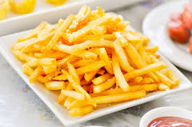

Papas fritas
Receta de papas fritas.
Ingredientes
- 3 ó 4 papas (300g.)
- 4 dientes de ajo
- Aceite de oliva
- Sal
Elaboración
- Calentar aceite en una sartén.
- Añadir las papas cortadas, la sal y los ajos.
- Freír hasta que estén doraditas.
- Emplatar y servir.